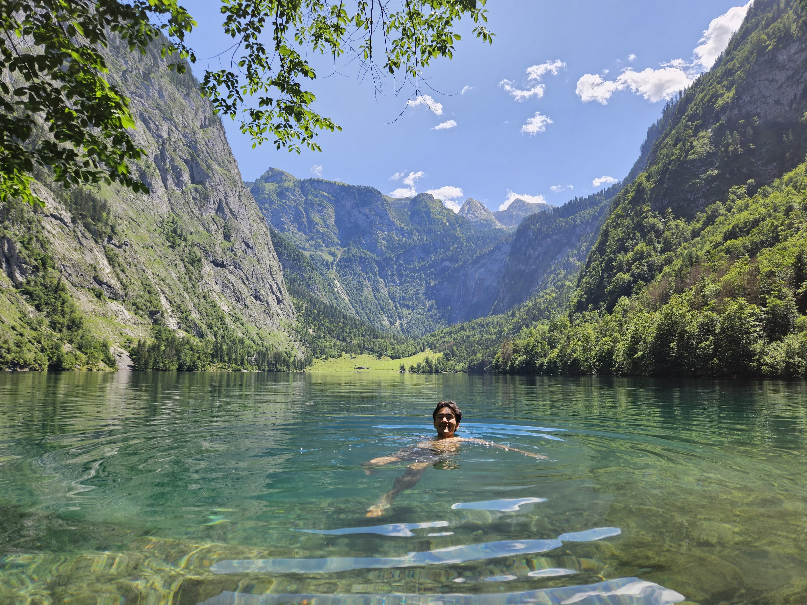

Aachen: Cathedrals, Charlemagne & Cold Beer
A week in one of Germany's oldest imperial cities. Carolingian history, UNESCO architecture, and the kind of food that makes you want to stay forever.
Read the Story →Adventure · Craft · Reflection
A mechanical engineering PhD student who chases new places, knits by firelight, and writes whatever's on his mind.

Mechanical Engineering PhD student. CFD researcher. Traveler. Occasional knitter. I built this site to document the things that matter to me: the places I go, the things I make, and the thoughts I can't shake loose.
When I'm not running simulations or studying hyporheic exchange, I'm usually somewhere I've never been before, with a camera in one hand and too much coffee in the other.
See My TravelsPlaces I've been, stories worth telling, and photos from the field.
A week in one of Germany's oldest imperial cities. Carolingian history, UNESCO architecture, and the kind of food that makes you want to stay forever.
Read the Story →More stories in the works. The road doesn't stop here.
Stay tunedEvery trip earns a story. More on the way.
Stay tunedHandmade projects. Slow work done well.
Cabled pullover worked in the round with honeycomb panels on the yoke.
Nordic snowflake pattern. My first serious two-color stranded work.
Classic toe-up construction with a slipped-stitch heel flap for durability.
Unfiltered thoughts on grad school, life, and everything in between.
There's a specific kind of exhaustion that comes from thinking about the same problem for years. Here's what that actually looks like from the inside.
Read more →Solo travel isn't lonely. It's the clearest lens I've found for understanding who you actually are when no one's watching.
Read more →Knitting, building, tinkering. There's something radical about creating physical things when everything else is a screen.
Read more →